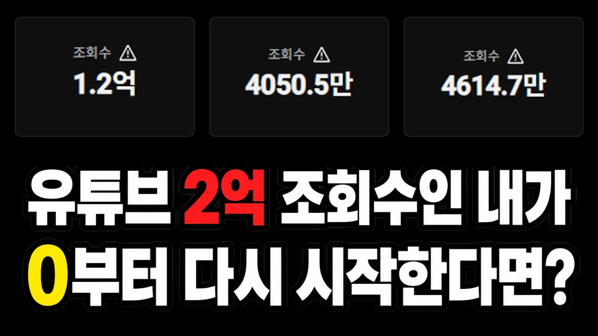

한 문장 결론
더 잘 준비하기보다, 작게 만들어 먼저 20개를 공개하고 무엇이 통하는지 배웁니다. [1]
편집보다 주제와 형식,
첫 20개는 학습용.
처음에 무엇을 준비하고, 어디에 돈과 시간을 써야 할까? 이 영상은 시청자가 원하는 주제를 반복 가능한 형식으로 만들고, 공개한 영상의 반응에서 배우라고 말합니다. [1]

사용자 첨부 썸네일. 이미지의 조회수와 발표자의 성과는 별도로 검증하지 않았습니다. [2]
더 잘 준비하기보다, 작게 만들어 먼저 20개를 공개하고 무엇이 통하는지 배웁니다. [1]
시청 수요가 있는 주제 중 오래 이야기할 수 있는 것을 고릅니다. 보여주는 형식도 함께 정합니다.
강의·장비·외주부터 시작하지 않습니다. 제작이 버거우면 먼저 형식을 단순하게 바꿉니다.
첫 영상들은 성공을 증명하기보다 부족한 점을 찾는 용도입니다. 조회수 확인도 학습에 씁니다.
읽기 전 주의 · ‘20개’는 발표자의 실행 제안이지 성공 보장선이 아닙니다. 이 보고서는 사용자 제공 자동 자막과 썸네일을 사용했으며, 성과·통계는 독립 검증하지 않았습니다. [1]
세부 내용 읽기 ↓발표자는 편집·장비부터 준비한 뒤 소재를 고민했던 자신의 초기 방식을 바꾸겠다고 말합니다. 우선순위는 주제, 형식, 그리고 시청자 수요와 나의 지속성입니다. [1]
주제는 ‘어떤 이야기인가’입니다. 사람들이 궁금해하지 않는 이야기를 꾸미는 데 시간을 쓰기보다, 다음에 다룰 이야기를 고민합니다.
형식은 ‘어떻게 보여주는가’입니다. 매번 새로운 제작법을 고민하기보다, 주제와 소재를 바꿔 반복할 수 있는 방식을 찾습니다.
사람들이 이미 보고 싶어 하는 주제를 먼저 모읍니다. 그중에서 내가 오래 이야기할 수 있고 경험을 보탤 수 있는 것을 고릅니다.
발표자는 이 방식만으로는 시청자의 호기심을 충분히 끌기 어렵다고 설명합니다.
무엇이 더 나은지 결과를 보고 싶게 만드는 형식으로 바꾼 예시입니다. [1]
발표자는 게임 → 해외 반응 → 지식 채널로 주제를 바꿔도 비슷한 제작 방식을 활용했다고 말합니다. 다른 장르에서의 성공을 보장한다는 뜻은 아닙니다. [1]
영상은 강의나 외주 자체를 부정하지 않습니다. 문제가 무엇인지 알기 전에 돈부터 쓰는 순서를 바꾸자는 주장입니다. [1]
발표자는 먼저 영상 20개 정도를 올리고 부족한 점을 파악한 뒤, 그 문제를 해결해 주는 강의를 고르겠다고 말합니다.
제작이 힘들다고 바로 편집자를 쓰거나 장비를 사기보다, 한 편에 들어가는 불필요한 작업부터 줄입니다.
발표자는 하루 한 번, 무엇이 잘됐는지 확인하는 용도로 보겠다고 말합니다. 확인 자체보다 다음 제작과 개선에 시간을 씁니다.
발표자는 채널 수익이 편집자 비용보다 클 때 편집을 맡기고, 확보한 시간을 다음 영상이나 채널에 쓰는 것을 ‘시간을 사는 일’로 설명합니다. [1]
이는 영상에 나온 판단 기준입니다. 실제 비용·수익 내역은 제공되지 않았으므로, 이 조건만으로 수익성이나 외주의 적정성을 확정할 수는 없습니다.
아래는 영상의 조언을 실행 순서로 재배열한 요약입니다. ‘20개’는 테스트를 시작하는 묶음이지, 정해진 기간이나 조회수를 보장하는 공식이 아닙니다. [1]
사람들이 보고 싶어 하는 이야기 중 오래 말할 수 있는 것을 고릅니다.
소재를 바꿔 다음 영상에도 적용할 보여주기 방식을 정합니다.
컷을 자르고 자막을 넣습니다. 초기부터 과도한 꾸미기에 매달리지 않습니다.
한 편의 완벽함보다 실제 공개를 이어가며 첫 20개를 만들어 봅니다.
무엇이 되고 안 되는지 살핍니다. 다음 소재와 제작 방식을 바꿔 봅니다.
발표자는 초반의 완벽주의를 내려놓고 시도 횟수를 늘렸어야 했다고 회고합니다. 핵심은 대충 만드는 것이 아니라, 시청자가 반응하지 않는 부분에 과도한 시간을 쓰지 않는 것입니다. [1]
영상은 업로드 빈도를 바꾸면 시도 횟수가 달라진다는 예시를 제시합니다.
아래는 발표자가 직접 제시한 사례이며, 비교 실험이나 평균 성과가 아닙니다. [1]
영상의 해석: 내가 공들인 지점과 사람들이 보는 이유는 다를 수 있습니다.
원문에 나온 핵심 수치와 판단의 범위를 그대로 구분했습니다. 제공된 자막만으로 확인할 수 없는 항목은 확정된 사실로 바꾸지 않았습니다. [1]
| 원문에 나온 주장 | 근거의 성격 | 보고서에서의 해석 범위 |
|---|---|---|
| 4년 · 3개 채널 누적 2억 조회수 | 발표자 자기보고 독립 검증 없음 | 발표자가 제시한 경력과 성과입니다. 채널별 원자료와 집계 기간이 없어 실제 성과를 별도로 확인하지 않았습니다. [1] |
| 4,470개 채널 조사 1천 명까지 평균 77개 영상 | 출처 미제시 인용 조사 원문 미제공 | 조사기관·시점·선정 방법이 자막에 없습니다. 표본도 구독자 1천 명을 넘은 채널이라고 설명돼, 전체 초보 채널의 평균이나 성공 필요 개수로 읽을 수 없습니다. [1] |
| 분야별로 쪼갠 강의는 원리가 없을 가능성이 크다 | 발표자의 평가 일반화 근거 미제공 | 세분화 자체가 나쁜 강의를 뜻한다는 근거는 제공되지 않았습니다. ‘시청 이유를 설명하는지 질문하라’는 구매 점검 기준과 구분해 읽습니다. [1] |
| 정체 뒤 한 영상이 터지고 다른 영상까지 이끈다 | 경험에 기초한 설명 보편적 성장 보장 아님 | 발표자는 이런 성장 양상을 경험했다고 설명합니다. 영상 수만 늘리거나 기다리기만 하면 반드시 성장한다는 뜻으로 확장하지 않습니다. [1] |
아래 체크리스트는 원문의 조언을 점검 문장으로 바꾼 것입니다. 별도의 성공 공식이나 기간을 추가하지 않았습니다. [1]
체크는 이 페이지 안에서만 유지됩니다. 외부로 전송하거나 저장하지 않습니다.
완벽한 한 편에 머무르지 않고, 불필요한 작업을 줄여 공개를 이어갑니다.
어떤 주제와 형식에 반응했는지 확인하고 다음 제작에 씁니다.
막히는 문제가 보이면 그 문제를 해결할 학습이나 강의를 검토합니다. [1]